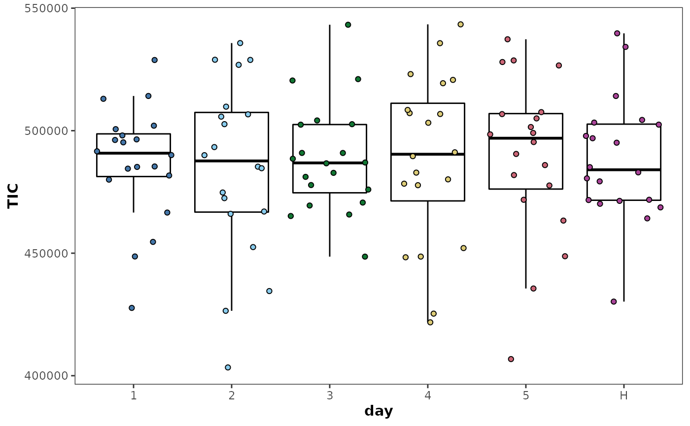

Metabolomics data pre-treatment
metabolyseR v0.13.2
Jasen Finch
02 November, 2020
Source:vignettes/pre_treatment.Rmd
pre_treatment.RmdIntroduction
Metabolomics data from any analytical technique requires various data pre-treatment steps prior to subsequent data mining or other downstream analyses and aids both data quality and integrity. It is important that appropriate pre-treatment strategies are used not only for the analytical technique being applied but are also suitable for the statistical or machine learning analyses that are to be utilised. Careful consideration of the pre-treatment steps to be undertaken are required as they can have substantial influence on the results and inferences taken from metabolomic analyses.
Data pre-treatment is the most faceted aspect of the analysis elements in metabolyseR. It itself is made up of a number of elements, which themselves are made up of methods. The following document will outline the application of each of these pre-treatment elements for use in exploratory analyses then outline how to apply them in routine analyses. For an introduction to the usage of metabolyseR for both exploratory and routine analyses, see the introduction vignette using:
vignette('introduction','metabolyseR')
To further supplement this document, a quick start example analysis is also available as a vignette:
vignette('quick_start','metabolyseR')
To begin, the package can be loaded using:
library(metabolyseR) #> #> Attaching package: 'metabolyseR' #> The following object is masked from 'package:stats': #> #> anova #> The following objects are masked from 'package:base': #> #> raw, split
Example data
The examples used here will use the abr1 data set from the metaboData package. This is nominal mass flow-injection mass spectrometry (FI-MS) fingerprinting data from a plant-pathogen infection time course experiment. The pipe %>% from the magrittr package will also be used. The example data can be loaded using:
Only the negative acquisition mode data (abr1$neg) will be used along with the sample meta-information (abr1$fact). Create an AnalysisData class object, assigned to the variable d, using the following:
d <- analysisData(abr1$neg,abr1$fact)
print(d) #> #> AnalysisData object containing: #> #> Samples: 120 #> Features: 2000 #> Info: 9
As can be seen above the data set contains a total of 120 samples and 2000 features.
Pre-treatment elements
The following sections will outline the numerous pre-treatment elements available within metabolyseR. There will be examples of their application during exploratory analyses along with useful visualisations that can aid interpretation of when particular treatments should be applied as well as the effect once they have been used.
Removal of samples, classes or features
In many situations it will be necessary to exclude either individual samples, sample classes or certain features from further analysis.
Individual samples can be removed using removeSamples as below, where the idx argument stipulates the sample information column cotaining the sample indexes and the samples argument a vector of sample indexes to remove.
d %>% removeSamples(idx = 'injorder',samples = 1) #> #> AnalysisData object containing: #> #> Samples: 119 #> Features: 2000 #> Info: 9
The removeClasses function can be used similarly to remove whole classes from further analysis:
d %>% removeClasses(cls = 'day',classes = 'H') #> #> AnalysisData object containing: #> #> Samples: 100 #> Features: 2000 #> Info: 9
The following will enable the removal of specified features as a vector supplied to the feautres argument:
d %>% removeFeatures(features = c('N1','N2')) #> #> AnalysisData object containing: #> #> Samples: 120 #> Features: 1998 #> Info: 9
There maybe occasions where the numbers of samples, classes or features to remove are greater than the numbers of samples, classes or features that are to be retained. In these situations it will be more convenient to directly specify the samples, classes or features to retain. Keeping samples, classes or features is outlined in the following section.
Keeping samples, classes or features
Often it will be necessary to retain only particular samples, sample classes or certain features for further analysis.
Individual samples can be kept using keepSamples as below, where the idx argument stipulates the sample information column cotaining the sample indexes and the samples argument, a vector of sample indexes to keep.
d %>% keepSamples(idx = 'injorder',samples = 1) #> #> AnalysisData object containing: #> #> Samples: 1 #> Features: 2000 #> Info: 9
The keepClasses function can be used similarly to keep whole classes for further analysis:
d %>% keepClasses(cls = 'day',classes = 'H') #> #> AnalysisData object containing: #> #> Samples: 20 #> Features: 2000 #> Info: 9
The following will specify features to keep, with a vector of feature names supplied to the features argument:
d %>% keepFeatures(features = c('N1','N2')) #> #> AnalysisData object containing: #> #> Samples: 120 #> Features: 2 #> Info: 9
There are likely to be occasions where the numbers of samples, classes or features to keep are greater than the numbers of samples, classes or features that are to be excluded. In these situations it will be more convenient to directly specify the samples, classes or features to remove. Removing samples, classes or features is outlined in the previous section.
Variable filtering based on occupancy
Occupancy provides a useful metric by which to filter poorly represented features (features containing a majority zero or missing values). An occupancy threshold provides a means of specifying this majority with variables below the threshold excluded from further analyses. However, this can be complicated by an underlying class structure present within the data where a variable may be well represented within one class but not in another.
The proportional occupancy for each feature within a data set for a given class structure can be calculated using the occupancy function, specifying the sample information column using the cls argument.
d %>% occupancy(cls = 'day') #> # A tibble: 11,914 x 4 #> day Feature N Occupancy #> <fct> <chr> <dbl> <dbl> #> 1 1 N1 0 0 #> 2 1 N10 0 0 #> 3 1 N100 0 0 #> 4 1 N1000 20 1 #> 5 1 N1001 20 1 #> 6 1 N1002 20 1 #> 7 1 N1003 20 1 #> 8 1 N1004 20 1 #> 9 1 N1005 20 1 #> 10 1 N1006 20 1 #> # … with 11,904 more rows
Alternatively the occupancy distributions can be plotted providing a useful overview of the data set:
d %>% plotOccupancy(cls = 'day')

It can be seen that there are a number of unoccupied features across all the sample classes with a small rise in the density distribution near 0.
There are two strategies for thresholding occupancy. The first is a maximum theshold; where the maximum occupancy across all classes is above the threshold. Therefore, for a feature to be retained, only a single class needs to have an occupancy above the threshold. It is this strategy that will be appropriate for most applications. A two-thirds maximum occupancy filter can be applied to the “day” sample information column of our data using:
maximum_occupancy_filtered <- d %>% occupancyMaximum(cls = 'day',occupancy = 2/3)
It can be seen below that this removes 240 features.
print(maximum_occupancy_filtered) #> #> AnalysisData object containing: #> #> Samples: 120 #> Features: 1760 #> Info: 9
Plotting the occupancy distributions shows that all the low occupancy features have now been removed.
maximum_occupancy_filtered %>% plotOccupancy(cls = 'day') #> Warning: Removed 6 rows containing non-finite values (stat_density). #> Warning: Removed 6 row(s) containing missing values (geom_path).

The alternative strategy is applying a minimum threshold; where the minimum occupancy across all classes is required to be above the freshold. Therefore, for a feautre to be retained, all classes would need to have an occupancy above the threshold. A two-thirds minimum occupancy filter can be applied to the “day” sample information column of our data using:
minimum_occupancy_filtered <- d %>% occupancyMinimum(cls = 'day',occupancy = 2/3)
It can be seen below that this removes 344 features.
print(minimum_occupancy_filtered) #> #> AnalysisData object containing: #> #> Samples: 120 #> Features: 1656 #> Info: 9
Data transformation
Prior to downstream analyses, metabolomics data often require transformation to fulfill the assumptions of a particular statistical/data mining technique.
There are a wide range of transformation methods available that are commonly used for the analysis of metabolomics data. These methods are all named with the prefix transform.
The effects of a transformation on a data set can be assessed using a supervised classifcation approach. The following performs a supervised random forest analysis of the example data and plots the results using both multidimensional scaling (MDS) and reciever operator characteristic (ROC) curves.
d %>% plotSupervisedRF(cls = 'day')

Alternatively a log10 transformation can be applied prior to analysis:
d %>% transformLog10() %>% plotSupervisedRF(cls = 'day')

Or a total ion count (TIC) normalisation where each individual sample is corrected by its TIC. This is one method that can be used to account for small variablility in sample concentration.
d %>% transformTICnorm() %>% plotSupervisedRF(cls = 'day')

The margin value is a metric that can be used to assess model perfomance. Positive values indicate a models ability, on average, to correctly predict the class labels of the analysed data.
As can bee seen in the plots above, the transformations have little effect on the overall structure of the data set. However, there are small increases in the margins of the transformed data (model improvement) with the TIC normalised data having the highest. Note that here, a non-parametric machine learning approach has been applied to assess the effects of the transformations on the data. Using a different approach such as the parametric Analysis Of Varience (ANOVA) which different underlying assumptions will likely give diffent results to the assessment above.
Sample aggregation
Metabolomic data can be aggregated using Sample aggregation allows the electronic pooling of samples based on a grouping variable. This is useful in situations such as the presence of technical replicates that can be aggregated to reduce the effects of pseudo replication.
d %>% occupancyMaximum(cls = 'day') %>% plotPCA(cls = 'day')

day_mean <- d %>% occupancyMaximum(cls = 'day') %>% aggregateMean(cls = 'day')
plotPCA(day_mean,cls = 'day',ellipses = FALSE)

Batch/block correction
There can sometimes be artificial batch related variability introduced introduced into metabolomics analyses as a result of analytical instrumentation or sample preparation. With appropriate sample randomisation (see section Variable filtering based on QC samples) batch related variability can be corrected for using the methods shown in the table below.
d %>% plotTIC(by = 'day',colour = 'day')

d %>% correctionCenter(block = 'day',type = 'median',nCores = 2) %>% plotTIC(by = 'day',colour = 'day')

Imputation of missing data
Missing values can have an important influence on downstream analyses with zero values heavily influencing the outcomes of parametric tests. Where and how they are imputed are important considerations and is highly related to variable occupancy. The methods provided here allow both these aspects to be taken into account and utilise Random Forest imputation using the missForest package.
d %>% keepClasses(cls = 'day',classes = c('H','5')) %>% occupancyMaximum(cls = 'day',occupancy = 2/3) %>% plotLDA(cls = 'day')

d %>% keepClasses(cls = 'day',classes = c('H','5')) %>% occupancyMaximum(cls = 'day',occupancy = 2/3) %>% imputeAll(nCores = 2) %>% plotLDA(cls = 'day')

Imputation accuracy is likely to be reduced if data is sparse or there is underlying class structure where there is significant discrimination.
d %>% keepClasses(cls = 'day',classes = c('H','5')) %>% occupancyMaximum(cls = 'day',occupancy = 2/3) %>% imputeClass(cls = 'day',nCores = 2) %>% plotLDA(cls = 'day')

Feature filtering based on quality control (QC) samples
A QC sample is an average pooled sample, equally representative in composition of all the samples present within an experimental set. Within an analytical run, the QC sample is analysed intermittently at equal intervals throughout the run. If there is class structure within the run this should be randomised within a block fashion so that the classes are equally represented in each block throughout the run. QC samples can then be injected between these randomised blocks. This provides a set of technical injections that allows the variability in instrument performance over the run to be accounted for and the robustness of the acquired variables to be assessed.
The technical reproducibility of an acquired variable can be assessed using it’s relative standard deviation (RSD) within the QC samples. The variable RSDs can then be thresholded to filter out variables that are poorly reproducible across the analytical runs. This variable filtering strategy has an advantage over that of occupancy alone as it is not dependent on underlying class structure. Therefore the variables and variable numbers will not alter if a new class structure is imposed upon the data.
The methods and arguments for variable filtering based upon QC samples are shown in the table below.
QC <- d %>% keepClasses(cls = 'day',classes = 'H')
QC %>% rsd(cls = 'day') #> # A tibble: 2,000 x 3 #> # Groups: day [1] #> day Feature RSD #> <fct> <chr> <dbl> #> 1 H N1 NaN #> 2 H N10 NaN #> 3 H N100 NaN #> 4 H N1000 0.170 #> 5 H N1001 0.217 #> 6 H N1002 0.276 #> 7 H N1003 0.219 #> 8 H N1004 0.205 #> 9 H N1005 0.179 #> 10 H N1006 0.271 #> # … with 1,990 more rows
QC %>% plotRSD(cls = 'day') #> Warning: Removed 123 rows containing non-finite values (stat_density). #> Warning: Removed 1 row(s) containing missing values (geom_path).

QC %>% occupancyMaximum(cls = 'day',occupancy = 2/3) %>% plotRSD(cls = 'day')

QC_filtered <- d %>% QCoccupancy(cls = 'day',QCidx = 'H',occupancy = 2/3) %>% QCrsdFilter(cls = 'day',QCidx = 'H',RSDthresh = 0.5)
print(QC_filtered) #> #> AnalysisData object containing: #> #> Samples: 120 #> Features: 1363 #> Info: 9
Routine analyses
The pre-treatment elements can be seen below.
preTreatmentElements() #> [1] "aggregate" "correction" "impute" "keep" #> [5] "occupancyFilter" "QC" "remove" "transform"
preTreatmentMethods('remove') #> [1] "classes" "features" "samples"
The parameter selection for the pre-treatment elements will firstly be discussed, with more in-depth discussion on the methods of the individual elements to follow.
Parameter Selection
The default pre-treatment parameters can be seen below.
analysisParameters('pre-treatment') #> Parameters: #> pre-treatment #> QC #> occupancyFilter #> cls = class #> QCidx = QC #> occupancy = 2/3 #> impute #> cls = class #> QCidx = QC #> occupancy = 2/3 #> parallel = variables #> nCores = detectCores() * 0.75 #> clusterType = getClusterType() #> seed = 1234 #> RSDfilter #> cls = class #> QCidx = QC #> RSDthresh = 0.5 #> removeQC #> cls = class #> QCidx = QC #> occupancyFilter #> maximum #> cls = class #> occupancy = 2/3 #> impute #> class #> cls = class #> occupancy = 2/3 #> nCores = detectCores() * 0.75 #> clusterType = getClusterType() #> seed = 1234 #> transform #> TICnorm
This pre-treatment analysis is made up of three elements that include variable filtering based on QC samples, missing data imputation and data transformation (QC, impute and transform respectively). Each of these elements is made up of varying numbers of methods, with each method having its own arguments. The order in which these elements and their methods is displayed is the order in which their execution upon the data will take place. This allows the fine specification of the data pre-treatment routines that are required for the particular data.
Pre-treatment routines can be customised by altering the preTreat slot within the AnalysisParameters object as shown below.
p <- analysisParameters('pre-treatment')
parameters(p,'pre-treatment') <- preTreatmentParameters( list( keep = 'classes', occupancyFilter = 'maximum', transform = 'TICnorm' ) )
changeParameter(p,'cls') <- 'day' changeParameter(p,'classes') <- c('H','1','2')
p #> Parameters: #> pre-treatment #> keep #> classes #> cls = day #> classes = c("H", "1", "2") #> occupancyFilter #> maximum #> cls = day #> occupancy = 2/3 #> transform #> TICnorm
This routine will firstly remove a number of classes, filter the variables based on class occupancy and then transform the data using a total ion count normalisation.
The pre-treatment routines are specified as a hierarchy of lists within lists. Firstly the pre-treatment elements should be specified within a list with the particular element methods specified as lists within these. The method arguments are then declared within these lists. Empty lists for methods can be specified to use the default arguments; however, element lists should not be empty.
The pre-treatment routine can then be executed using the following.
analysis <- metabolyse(abr1$neg,abr1$fact,p)
#>
#> metabolyseR v0.13.2 Mon Nov 2 15:47:10 2020
#> ________________________________________________________________________________
#> Parameters:
#> pre-treatment
#> keep
#> classes
#> cls = day
#> classes = c("H", "1", "2")
#> occupancyFilter
#> maximum
#> cls = day
#> occupancy = 2/3
#> transform
#> TICnorm
#> ________________________________________________________________________________
#> Pre-treatment …
Pre-treatment ✓ [9.2S]
#> ________________________________________________________________________________
#>
#> Complete! [9.2S]analysis #> #> metabolyseR v0.13.2 #> Analysis: #> Mon Nov 2 15:47:10 2020 #> #> Raw Data: #> No. samples = 120 #> No. features = 2000 #> #> Pre-treated Data: #> Mon Nov 2 15:47:19 2020 #> No. samples = 60 #> No. features = 1723
analysis %>% plotSupervisedRF(cls = 'day',type = 'pre-treated')

Method reference table
#> Warning in stri_c(..., sep = sep, collapse = collapse, ignore_null = TRUE):
#> argument is not an atomic vector; coercing
#> Warning in stri_c(..., sep = sep, collapse = collapse, ignore_null = TRUE):
#> argument is not an atomic vector; coercing
#> Warning in stri_c(..., sep = sep, collapse = collapse, ignore_null = TRUE):
#> argument is not an atomic vector; coercing
#> Warning in stri_c(..., sep = sep, collapse = collapse, ignore_null = TRUE):
#> argument is not an atomic vector; coercing
#> Warning in stri_c(..., sep = sep, collapse = collapse, ignore_null = TRUE):
#> argument is not an atomic vector; coercing
#> Warning in stri_c(..., sep = sep, collapse = collapse, ignore_null = TRUE):
#> argument is not an atomic vector; coercing
#> Warning in stri_c(..., sep = sep, collapse = collapse, ignore_null = TRUE):
#> argument is not an atomic vector; coercing
#> Warning in stri_c(..., sep = sep, collapse = collapse, ignore_null = TRUE):
#> argument is not an atomic vector; coercing
#> Warning in stri_c(..., sep = sep, collapse = collapse, ignore_null = TRUE):
#> argument is not an atomic vector; coercing
#> Warning in stri_c(..., sep = sep, collapse = collapse, ignore_null = TRUE):
#> argument is not an atomic vector; coercing
#> Warning in stri_c(..., sep = sep, collapse = collapse, ignore_null = TRUE):
#> argument is not an atomic vector; coercing
#> Warning in stri_c(..., sep = sep, collapse = collapse, ignore_null = TRUE):
#> argument is not an atomic vector; coercing
#> Warning in stri_c(..., sep = sep, collapse = collapse, ignore_null = TRUE):
#> argument is not an atomic vector; coercing| Element | Method | Description | Arguments | Defaults |
|---|---|---|---|---|
| aggregate | mean | mean aggregate | cls - info column to use for aggregation index | cls = class |
| median | median aggregate | cls - info column to use for aggregation index | cls = class | |
| sum | sum aggregate | cls - info column to use for aggregation index | cls = class | |
| correction | center | Batch correction using average centering. | block - info column containing sample block groupings to use for correction; type - averaging to use; eg. mean or median; nCores - number of cores for parallisation; clusterType - cluster type for parallisation | block = block; type = median; nCores = detectCores() * 0.75; clusterType = getClusterType() |
| impute | all | Impute missing values across all samples using Random Forest |
occupancy - occupancy threshold for imputation; parallel - parallel type to use. See ?missForest for details; nCores - number of cores for parallisation; clusterType - cluster type for parallisation; seed - random number seed
|
occupancy = 2/3; parallel = variables; nCores = detectCores() * 0.75; clusterType = getClusterType(); seed = 1234 |
| class | Impute missing values class-wise using Random Forest | cls - info column to use for class labels; occupancy - occupancy threshold for imputation; nCores - number of cores for parallisation; clusterType - cluster type for parallisation; seed - random number seed | cls = class; occupancy = 2/3; nCores = detectCores() * 0.75; clusterType = getClusterType(); seed = 1234 | |
| keep | classes | keep classes | cls - info column containing class information; classes - classes to keep | cls = class; classes = c() |
| features | keep features | features - features to keep | features = character() | |
| samples | keep samples | idx - info column containing sample indexes; samples - sample indices to keep | idx = fileOrder; samples = c() | |
| occupancyFilter | maximum | maximum thresholded class occupancy filtering | cls - info column to use for class labels; occupancy - occupancy threshold | cls = class; occupancy = 2/3 |
| minimum | minimum thresholded class occupancy filtering | cls - info column to use for class labels; occupancy - occupancy threshold | cls = class; occupancy = 2/3 | |
| QC | impute | Impute missing values in QC samples |
cls - info column to use for class labels; QCidx - QC sample label; occupancy - occupancy threshold for imputation; parallel - parallel type to use. See ?missForest for details; nCores - number of cores for parallisation; clusterType - cluster type for parallisation; seed - random number seed
|
cls = class; QCidx = QC; occupancy = 2/3; parallel = variables; nCores = detectCores() * 0.75; clusterType = getClusterType(); seed = 1234 |
| occupancyFilter | Filter variables based on occupancy in QC samples | cls - info column to use for class labels; QCidx - QC sample label; occupancy - occupancy threshold for filtering | cls = class; QCidx = QC; occupancy = 2/3 | |
| removeQC | Remove QC samples | cls - info column to use for class labels; QCidx - QC sample label | cls = class; QCidx = QC | |
| RSDfilter | Filter features based on their relative standard deviation in QC samples | cls - info column to use for class labels; QCidx - QC sample label; RSDthreshold - RSD threshold for filtering | cls = class; QCidx = QC; RSDthresh = 0.5 | |
| remove | classes | remove classes | cls - info column containing class information; classes - classes to remove | cls = class; classes = c() |
| features | remove variables | features - features to remove | features = character() | |
| samples | remove samples | idx - info column containing sample indexes; samples - sample indices to remove | idx = fileOrder; samples = c() | |
| transform | asinh | Arc-sine scaling | ’’ - | |
| auto | Auto scaling | ’’ - | ||
| center | Mean centering | ’’ - | ||
| level | Level scaling | ’’ - | ||
| ln | Natural log scaling | add - value to add prior to transformation | add = 1 | |
| log10 | Log10 scaling | add - value to add prior to transformation | add = 1 | |
| pareto | Pareto scaling | ’’ - | ||
| range | Range scaling | ’’ - | ||
| sqrt | Square root scaling | ’’ - | ||
| TICnorm | Total ion count normalisation | ’’ - | ||
| vast | Vast scaling | ’’ - |